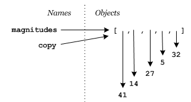
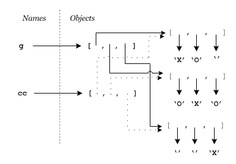

Copying a list
What doesn't work
As with changing a list, our first attempt at copying a list may not succeed. The most common thing students try is something like this,
magnitudes = [41, 14, 27, 5, 32]
copy = magnitudesReasoning that copy will now contain a copy of magnitudes. Of course a
moments thought about how reference semantics works will show that magnitudes and copy are now just both references to the same list object, i.e.

What works (sort of) 1
One way to copy a list is to create an empty one, and then loop through the source list appending elements to the new one,
magnitudes = [41, 14, 27, 5, 32]
copy = []
for m in magnitudes:
copy.append(m)this gets us what we wanted,

What works (sort of) 2 and 3
Copying a list is so common that there are some Pythonic shortcuts available. One is to take a slice of the entire list and assign it to copy,
copy = magnitudes[:]This works because slices create new objects.
Another is to use the class constructor* for lists, list, to create a new list from an existing one,
copy = list(magnitude)What's with the "(sort of)"?
Well sometimes these do all we want, but other times its important to realize they are all creating first level copies of the lists. Recall our Tic-Tac-Toe lists:
g = [['X', 'O', ''], ['O', 'X', 'O'], ['', '', 'X']]Watch what happens when make a copy and then modify the copy,
>>> g = [['X', 'O', ''], ['O', 'X', 'O'], ['', '', 'X']]
>>> cc = g[:]
>>> print cc
[['X', 'O', ''], ['O', 'X', 'O'], ['', '', 'X']]
>>> cc[0][0] = 'A'
>>> print cc
[['A', 'O', ''], ['O', 'X', 'O'], ['', '', 'X']]
>>> print g
[['A', 'O', ''], ['O', 'X', 'O'], ['', '', 'X']]
>>>Do you see it? Changing element cc[0][0] to 'A'
also changed element g[0][0]. But if cc is a copy
of g that shouldn't have happened! The problem is that
cc isn't a complete copy of g. It's only copied the
first level references in g. Those references still point to the
same sublist objects, i.e.

So since cc[0] and g[0] still reference the same
list object, changing cc[0][0] changes g[0][0].
Deep copying
As the Tic-Tac-Toe example shows sometimes we have objects containing references to other objects, and in some applications there can be far more than just two levels of reference. What to do if we still need a copy of the complete structure? This comes up often enough that Python provides a standard library function to create the copy for you,
>>> import copy
>>> g = [['X', 'O', ''], ['O', 'X', 'O'], ['', '', 'X']]
>>> cc = copy.deepcopy(g)
>>> cc[0][0] = 'A'
>>> print cc
[['A', 'O', ''], ['O', 'X', 'O'], ['', '', 'X']]
>>> print g
[['X', 'O', ''], ['O', 'X', 'O'], ['', '', 'X']]
>>>Summary
Create a shallow copy using a slice, copy = original[:]
or the list constructor, copy = list(original).
If a deep copy is needed (it often isn't), use the copy module, copy
= copy.deepcopy(original).
* We used these before for converting from one object type to another, but they can also be used to create another object of one type from an existing object of that same type.